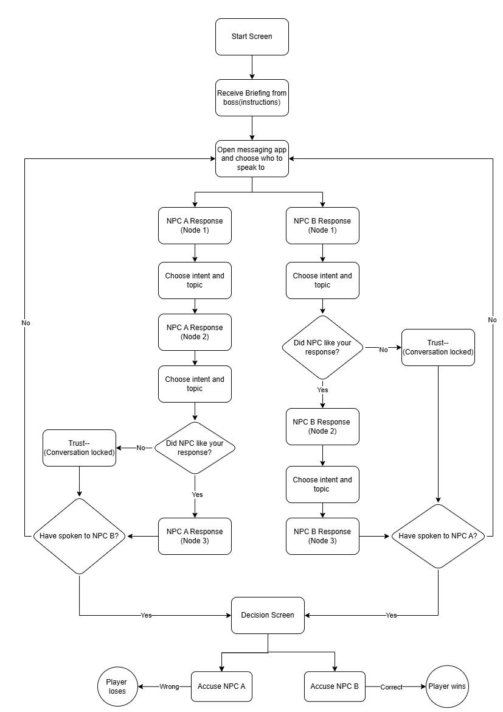
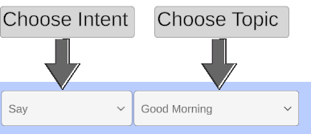
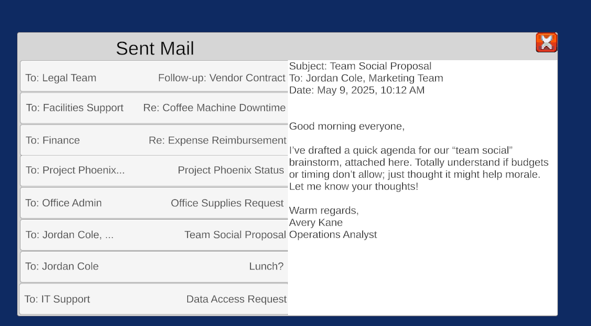

Corporate Investigator
Narrative Systems Prototype
**Genre:** Narrative Systems Prototype
**Role:** Game Design, Programming
**Engine:** Unity
**Timeframe:** 1 week
## Inspiration and Idea Development
The idea for Corporate Investigator came after watching a YouTube lecture on dialogue systems, where the speaker referenced a short game called *We Should Talk.* In that game, players construct sentences from modular parts, which shapes both the tone and content of each conversation.
That stuck with me, especially the idea of separating player intent from the topic of what they were saying. It felt like a more expressive, systemic approach to dialogue than the typical *choose a line* setup. I wanted to see if I could adapt that structure into a different context — something less personal and more investigative.
That idea, combining intent-driven choices with trust-based consequences, became the core of *Corporate Investigator.*
## Overview
Corporate Investigator is a short, desktop-style investigation prototype where players must figure out which of two coworkers leaked sensitive data from the company.
Built solo over one week, the project focuses on:
* Dialogue logic
* Intent-based input
* Trust as a systemic variable
* A custom UI with multiple interactive "apps."
The visuals are simple as I was focused on system design.
The design challenge was substantial: I wanted to make dialogue feel like a puzzle, with real player agency driving what unfolds.
## On Scope and Proving the System
This was a high-effort prototype built under time pressure. Due to limited time, I opted to spend more time prototyping the core mechanics of the dialogue instead of on more extensive documentation. I focused on getting scriptable objects to work as the driving factors of my dialogue, as I usually dont use scriptable objects for dialogue purposes.
I created a detailed flowchart showing how intent, topic, and trust would drive dialogue flow, especially how distrust would block any further conversation, and used that to map out interactions and logic gating. I also wanted a visual of the system for my pitch to my professor, so that it made more sense. He approved it but noted that it would be a lot of work. He was right, of course, I spent much more time than planned on development and tiny bugs, but I was determined to make it work.

The flowchart helped me plan scope, manage logic, and show that this wasn’t just an idea, it was a real structure I could build and deliver.
## Dialogue System Design
The core interaction model uses a pair of dropdowns:
* One for Intent (tone)
* One for Topic(content focus)

This allows players to shape both the emotional tone and the focus of their conversation.
It also creates soft and hard failure states:
* Low trust can lock the player out of conversation branches, or out of a conversation entirely.
* High trust can unlock new paths or responses.
* Players can feel the consequences of their choices, even when the system doesn’t explicitly tell them why things are changing.
This system also tracks full per-NPC state :
* Conversation history is preserved per partner.
* The player can switch between partners at any time.
* Trust is updated dynamically and affects future interaction options.
I used ScriptableObjects for this game, as I had played around with them before but had never used them for dialogue but they fit very well with populating the text bubbles and drop down menus. They could be hard to manage, especially considering transitions, but they ultmatley became easier to manage with more planning--but I had to physically write down the node flow quite often.
## UI and Desktop Mockup
To house the investigation, I built a basic faux desktop UI.
Players can switch between multiple apps — Emails, Reports, Suspect Profiles — to gather information. Emails are contained to the specific email tab where the player can view either Avery or Jordan's emails through the company. They're meant to show team dynamics and the dynamic between Jordan and Avery in particular, as well as their individual personalities. Reports were meant to show something specific depending on the NPC.

The systems aren’t deep, but they provide enough structure to support deduction and player-driven decision-making.
This was also my first time building a workspace-style UI where:
* Chat behaves like a messaging app.
* Conversations are asynchronous and stateful.
* Players manage the flow of their own investigation.
## Takeaways
Corporate Investigator taught me how much dialogue systems rely on structure, and how scope can easily spiral. I also saw how you can have an idea for something that looks cool and sounds cool to people, but it doesn't always hit the mark.
Although I think out-of-the-box thinking is awesome, and that crafting unique dialogue systems is great experimentation, not all ideas necassarily work. The dropdown menus here work, but they can feel clunky. They can also be a little too straight forward or boring. This project also taught me that even though I'm excited about a system and want to make it work, when story is such an intergral part of the game, it needs to take more of a front seat than it did in this project.
One thing I noticed during testing was how much player preference affected experience with the system. Some players really enjoyed the freedom to explore and liked the different interaction mechanic. Others found the system too open-ended and would have preferred more guided flow. This taught me two key things: first, that different player types respond very differently to systemic dialogue, and it's important to consider that in the design. Second, that I need to test with a wider variety of players with a range of playstyles and bring in that diversity of playstyle feedback earlier in the process, not just late in development when things are looking a little cleaner.
The system runs start to finish, but the ending is messy, two dialogue nodes fire simultaneously due to overlapping conditions. It taught me how important it is to manage transitions and finalize state after branches. At the time, I left it because I prioritized finishing the core system, but now I’d resolve it by checking trust thresholds and using a cleaner trigger resolution; either event sequencing or a short wait before progressing. The transitions to low trust or high trust are clunky as well, almost as if the NPC hasn't responded. I would resolve that as well.
I learned to:
* Plan logic before scripting scenes.
* Design and tune trust as a systemic narrative variable.
* Think about per-NPC state, switching, and UI expectations.
* Manage edge cases where player tone and trust can cause unexpected flow shifts.
* Push back my own unease in writing to produce a playable, finished product by a deadline.
I also learned that even under a tight deadline, a system built with clarity and intent can feel engaging, even when the visuals are basic.
## Next Improvements
If I had more time, I would:
* Improve chat bubble layout for better message flow.
* Add clearer feedback when conversations are fully locked (trust=0) or when high trust paths are unlocked.
* Allow for more interaction between desktop exploration and chat flow; for example, unlocking new topics after reading certain emails.
* Refine high trust and low trust transitions to feel more natural. Right now they feel clunky, as if the NPC has not responded correctly.
* Improve narrative structure and writing
* Improve the tutorial section and focus more on guiding the player through the system in a way that makes more sense to more playstyles(or add options to opt out of tutorials).